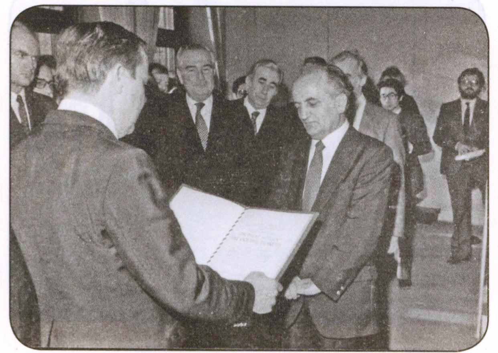
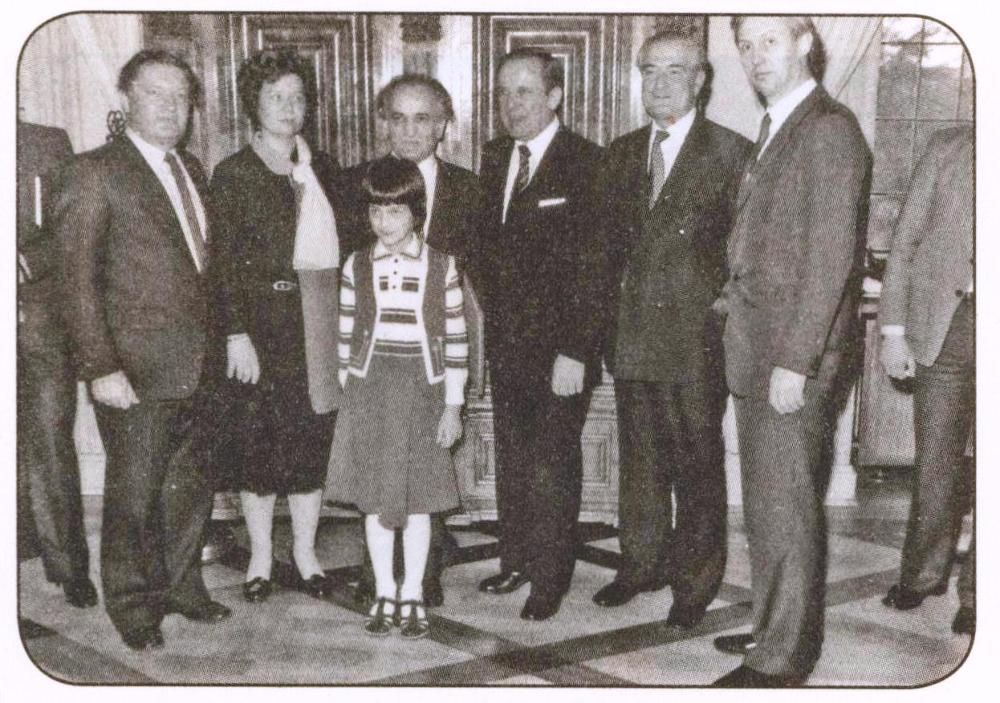

Frankfurt Valisi Prof. Dr. Fuat Sezgin’e
J. W. Goethe plaketini iletiyor (1979)

Prof. Dr. Fuat Sezgin, eşi Dr. Ursula Sezgin ve kızı Hilal,
Goethe plaketi münasebeti ile Frankfurt Valisi Dr. Wallmann,
Türkiye Sefiri Halefoğlu, Frankfurt Üniversitesi Rektörü Prof. Kelm (sağda)